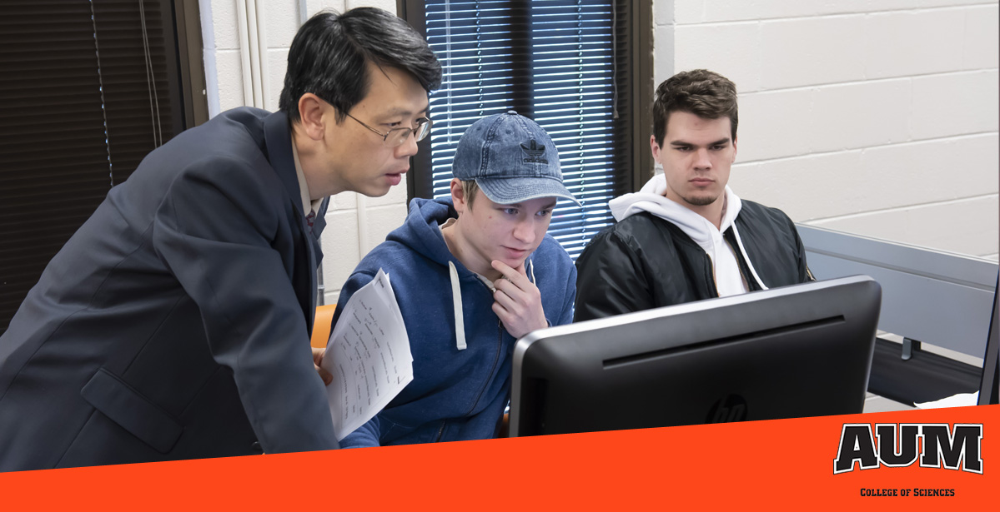

Course Listings for Computer Science

Program Overview
The course listings below are a representation of what this academic program requires. For a full review of this program in detail, please see our official online catalog AND consult with an academic advisor. This listing does not include the core curriculum courses required for all majors and may not include some program-specic information, such as admissions, retention and termination standards.
Computer Science Major (CSCI)
Total semester hours for the CS program (including core courses) – 124
| Course # | Required Courses |
|---|---|
| 1500 | Ethics in Computer Science |
| 2000 | Structured Programming I |
| 2100 | Introduction to Computer Architecture |
| 3000 | Structured Programming II |
| 3100 | Unix and C |
| 3200 | Parallel Programming |
| 3600 | Fundamental Algorithm Design and Analysis |
| 3700 | Data Base Systems |
| 4100 | Software Components |
| 4300 | Introduction to Operating Systems |
| 4350 | Network Systems |
| 4400 | Distributed Computing |
| 4450 | Data Intensive Computing |
| 4950 | Senior Seminar in Computer Science |